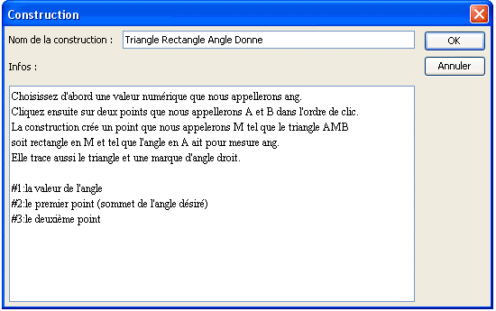

Nous allons expliquer sur un exemple comment créer une construction et l’utiliser.
Nous désirons créer une construction qui, étant donnés deux points A et B et une valeur numérique ang créera un triangle AMB rectangle en M tel que l'angle BÂM ait pour mesure ang.
Créez une nouvelle figure à l’aide du menu Fichier >> Nouvelle figure.
Si nécessaire, utilisez le menu Options >> Figure en cours pour que l’unité d’angle de la figure soit le degré (onglet Unité d’angle).
Utilisez l’icône  pour créer un calcul nommé ang qui contiendra comme formule 30.
pour créer un calcul nommé ang qui contiendra comme formule 30.
Créez deux points libres à l’aide de l’icône  et nommez-les A et B à l’aide de l’icône
et nommez-les A et B à l’aide de l’icône  .
.
Utilisez l’icône  pour créer le milieu du segment [AB].
pour créer le milieu du segment [AB].
A l’aide de l’icône  créez le cercle de centre ce milieu et passant par A.
créez le cercle de centre ce milieu et passant par A.
Créons maintenant l’image du point B par la rotation de centre A et d’angle ang.
Pour cela cliquez sur l’icône  . Cliquez ensuite sur A (centre de la rotation) qui se met à clignoter. Cliquez ensuite pour créer l’image de B par cette rotation.
. Cliquez ensuite sur A (centre de la rotation) qui se met à clignoter. Cliquez ensuite pour créer l’image de B par cette rotation.
Cliquez ensuite sur l’icône  pour créer la demi-droite d’origine A et passant par ce dernier point.
pour créer la demi-droite d’origine A et passant par ce dernier point.
A l’aide de l’outil d’intersection  créons l’intersection de cercle et de cette demi-droite. Pour cela cliquez sur le cercle et la demi-droite.
créons l’intersection de cercle et de cette demi-droite. Pour cela cliquez sur le cercle et la demi-droite.
Nous appellerons ce point C.
Utilisez l’icône  pour créer les segments [AB], [BC] et [CA] et l’icône
pour créer les segments [AB], [BC] et [CA] et l’icône  pour créer la marque d’angle droit de l’angle en C.
pour créer la marque d’angle droit de l’angle en C.
Notre figure est maintenant prête pour créer la construction.
Utilisez le menu Constructions >> Choisir les éléments sources >> Graphiques. Cliquer sur A puis B, puis cliquez sur le bouton droit de la souris.
Utilisez le menu Constructions >> Choisir les éléments sources >> Numeriques.
Une boîte de dialogue s’ouvre. La liste de gauche contient les éléments de type calcul de la figure qui peuvent être choisis comme éléments sources.
Cliquez sur ang puis sur le bouton Insérer (vous pouvez aussi double-cliquer sur ang) puis validez.
Il nous reste à désigner quels sont les éléments finaux de notre figure qui sont dans cet exemple uniquement graphiques.
Remarquons que MathGraph32 ne permet de désigner que des objets finaux qui sont construits exclusivement à l’aide des objets sources.
Utilisez le menu Constructions >> Choisir les éléments finaux >> Graphiques.
Cliquez sur C, sur les trois segments et la marque d’angle puis cliquez sur le bouton droit.
Pour finaliser la construction, utilisez la commande Construction >> Finir la construction.
Renseignez la boîte de dialogue qui apparaît comme ci-dessous.

A noter : le nom ne doit pas comporter de caractères accentués.
Expliquons les informations entrées pour la construction :
Les trois premières lignes sont des informations que l'utilisateur aura à sa disposition en appuyant sur la touche F7 lors de l'utilisation de la construction.
Les trois dernières serviront à indiquer à l'utilisateur quel est l'objet qu'il doit désigner lors de l'implémentation de la construction. Chaque indication est précédée du caractère # suivi du numéro de l'objet et d'un caractère : (deux points).
Attention : Lors de l'implémentation d'une construction, les objets non graphiques doivent être désignés en premier.
Si vous ne la supprimez pas, cette construction sera enregistrée avec votre figure mais il est préférable de l’enregistrer séparément sur votre disque dur par exemple.
Utilisez pour cela le menu Construction >> Enregistrer une construction.
Une boîte de dialogue s’ouvre vous présentant les constructions présentes dans la figure. Notre seule construction est déjà sélectionnée.
Cliquez sur le bouton Enregistrer pour enregistrer cette construction à l’endroit de votre choix (il est conseillé de garder le nom de la construction comme nom du fichier et d'éviter les caractères accentués).
Nous allons maintenant montrer comment implémenter cette construction dans une autre figure.
Utilisez le menu Fichier >> Nouvelle figure pour créer une nouvelle figure vierge.
Utilisez le menu Calculs >> Variable >> Nouvelle variable pour créer une variable nommée a de valeur minimale - 90, de valeur maximale 90, de pas d’incrémentation 10, de valeur actuelle 30 et cochez la case Fenêtre associée.
Créez deux points libres et nommez-les C et D.
Utilisez le menu Construction >> Implémenter une construction depuis un fichier et ouvrez la construction précédemment enregistrée.
Utilisez ensuite le menu Construction >> Implémenter une construction.
Une boîte de dialogue vous propose les constructions présentes, en l’occurrence celle que nous venons de charger qui est sélectionnée.
Cliquez sur OK.
Une boîte de dialogue s’ouvre dont le but est de choisir quelle est la valeur numérique de notre figure qui jouera le rôle du calcul que nous avions appelé ang (objet source non graphique).
Cliquez sur a dans la liste proposée.
Cliquez ensuite sur les points C et D.
Lors de la désignation des objets sources graphiques, un appui sur F7 fera apparaître les informations de la constructions (s'il y en a ).
Vous voyez alors apparaître les objets finaux : les trois segments, le point et la marque d’angle.
En cliquant sur les boutons + et - de la petite boîte de dialogue associée à la variable vous pouvez modifier les valeurs de l’angle.
Remarquons que dans des constructions plus sophistiquées, on peut aussi avoir des objets finaux de type calcul.
En utilisant l’historique de la figure( raccourci F5) et en cochant la case Tracer dans les objets intermédiaires des constructions pour pourrez voir comment notre figure a été créée.
Les objets intermédiaires ne peuvent pas être utilisés pour créer d’autres objets, sauf si vous utilisez le menu Construction >> Fusionner les constructions de la figure.
Une remarque importante :
Normalement, les points libres ne sont pas destinés à devenir des objets finaux. Mais dans certains cas, cela peut être utile.
Pour qu'un point libre soit un objet final, procéder de la façon suivante :
Choisir le point libre comme objet initial, ce qui permet de choisir les objets finaux construits avec ce point. Choisir aussi ce point libre dans les objets finaux (une confirmation vous sera demandée). Votre point libre sera alors un objet final.
Cette méthode peut avoir un inconvénient pour une construction destinée à être utilisée plusieurs fois dans la même figure. Car il y aura alors plusieurs points libres situés au même endroit.
Created with the Personal Edition of HelpNDoc: Free EBook and documentation generator